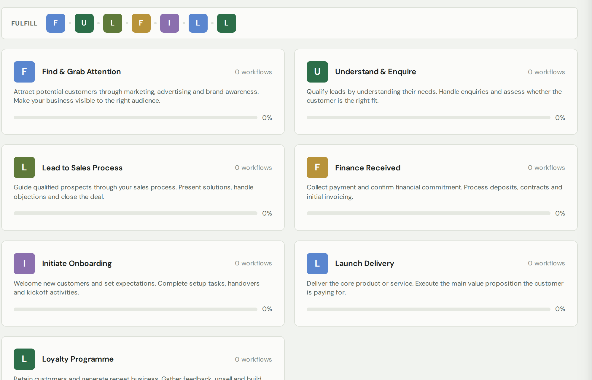

Your guide to this page
It's a place to map out every process in your business, laid out along the journey a customer takes with you — from first hearing about you all the way to becoming a loyal regular. Once it's written down, anyone on your team can follow it.
The map is built around seven stages (they spell FULFILL):

The AI Agents tab is the home for your AI workforce. It shows three layers:
To create an agent, click + Create an agent. The AI asks you seven questions (the AGENTIC script) one at a time and checks each answer as you go:
Every agent has one of three guardrail styles: Autonomous (does the whole job itself), Approval required (prepares everything, acts only after your yes), or Hybrid escalation (runs the agreed process, escalates anything unusual to you).
Every agent is judged on two numbers: its goal metric (the target on its job card versus its current reading) and its accuracy (of the work you checked, how much was right). Accuracy bands steer the guardrails: below 70% means Approval required, 70 to 90% suggests Hybrid, 90%+ with a clean run makes it Autonomous-eligible. Tightening happens automatically; loosening is always your click. Each agent's panel also holds its full working prompt and a learning log that grows from your approval feedback.